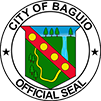

To bring harmony among constituents through participation in moral, social, environmental and recreational programs towards a better community.
To maintain a resilient, safe, and healthy community and attain a good quality of life and prosperity for all Scout Barrio residents.
We are committed to serve our community in sustaining development with dignity, transparency and utmost dedication.
THERE is a law enacted by the Senate and House of Representatives of the Philippines in Congress that promotes animal welfare known as Republic Act No. 8485 or the Animal Welfare Act of 1998.
The primary purpose of this Act is to protect and promote the welfare of all animals in the Philippines by supervising end regulating the establishment and operations of all facilities utilized for breeding, maintaining, keeping, treating or training of all animals either as objects of trade or as household pets including birds.
Scout Barrio has free vaccination for dogs every twice a year offered by DEPARTMENT OF HEALTH (DOH). It can be done through place where people gather together or at their homes. If it’s done at their homes, it’s their choice if they want to donate for their efforts getting at your house. This program in barangay decreases the risk of rabies when dog bites you. Getting bitten has a lower possibility since there is also a program in which all pet owners should tie their dogs in their house. In some cases, wherein their dogs got out it can be reported by any resident or it will be caught in a dog trap. There will be a fine that they need to pay before they can retrieve their pet.
In the case regarding stray dogs which came from other barangays that are caught by the dog trap or reported by any resident, the owner of the dog can claim it but they need to pay a certain amount and will be given a warning notice.
The pet owners can walk their pets on the streets or any place inside the barangay but they have the responsibility to clean their pets' waste. It is recommended that the pet owners bring plastics for their pets' wastes.
©Copyright 2018. Animal Welfare. All Rights Reserved.
Developed By Group 1